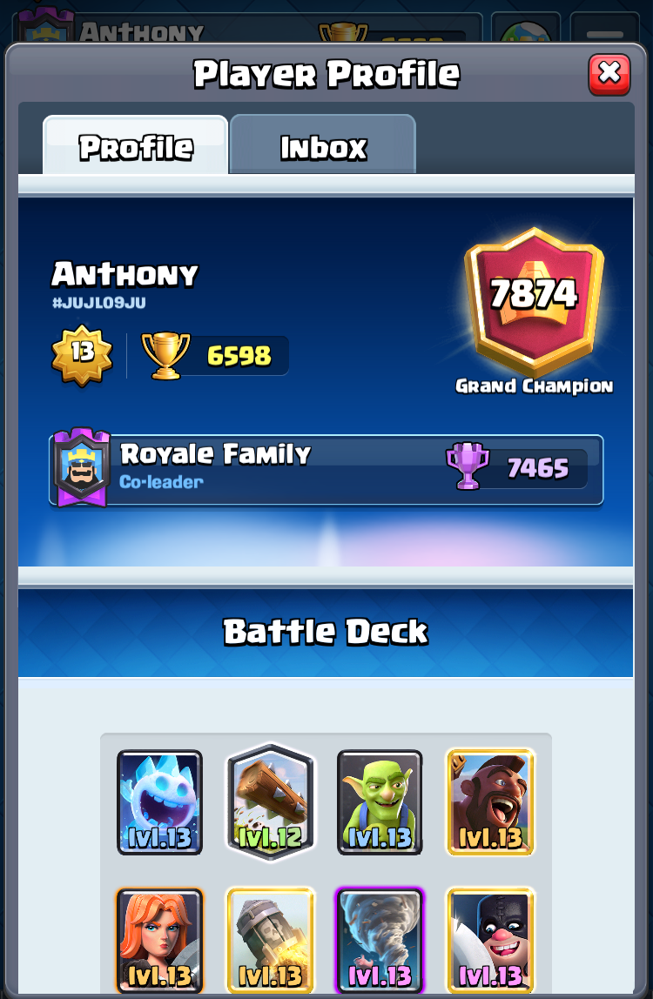
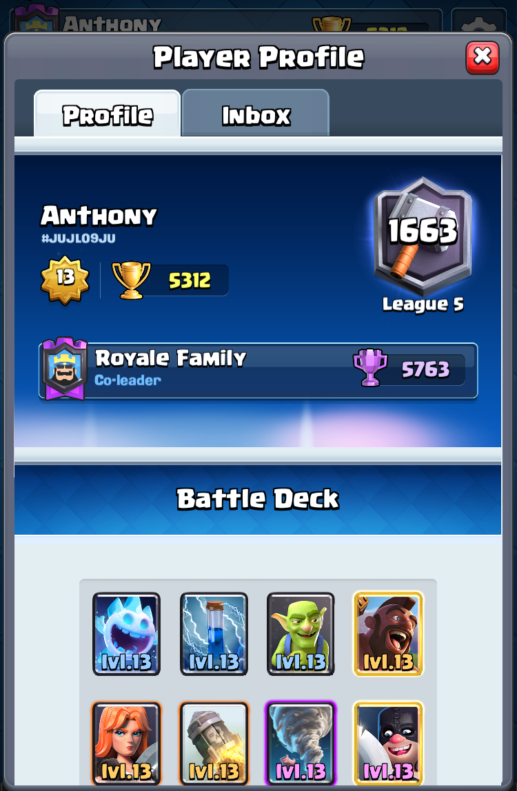

As nerdy as all of that may have been, I still do some fun stuff. Or at least I think it's fun. :)


I'm not an intense gamer, but I do play Clash Royale daily (still after three years!). Ever since the ladder rework in mid-April, I've pushed over 6000 trophies each season, up in the "champion" leagues where the top few percent of players compete. Now I have a personal best of 6598 trophies (just missing "Royal Champion" by 2 trophies...), and I even got myself ranked #1663 midway into the season last April! I also used to play some chess (haters will call this nerdy), competing in tournaments and brushing up on tactics. If Facebook stalking (if you can find me by my not-so-unique name) isn't enough for you, go ahead and check my
Clash Royale and
chess profiles.
Musically, I've been a drummer since middle school, and I even played in a rock band for a couple years in high school. Sadly, having a drumset in my apartment here would annoy my roommates and neighbors, so all I can do now is (sort of) beatbox or get lit through
virtual drums.
Other random things I enjoy are playing basketball and laying in bed for an extra multiple of 9 minutes before the alarm goes off again (that's how my snooze works apparently). Oh, and Mickey Mouse is great. If you haven't figured it out from the background. Just making sure. :)